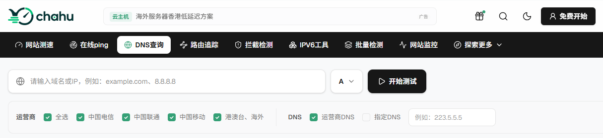
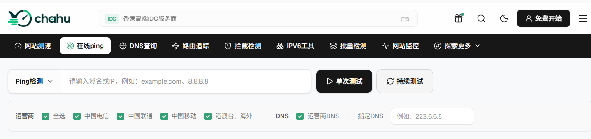
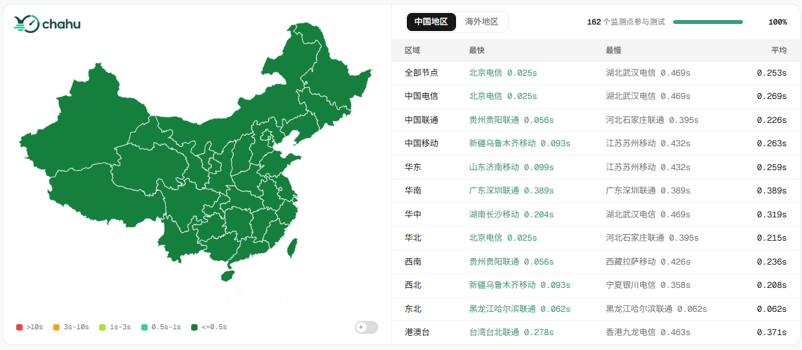

网站打开很慢、页面一直转圈，最后提示连接超时，看起来都是“网站访问出了问题”，但实际原因可能完全不同：有时候是域名解析迟迟没有结果，有时候是服务器端口根本连不上，也有一种情况是连接已经建立，只是源站、数据库或者后端接口迟迟没有返回内容。表面上都是“打不开”，故障位置却可能相差好几层。
遇到网站访问超时，不能只靠反复刷新页面或盲目重启服务器。更高效的方法是先弄清楚请求卡在了哪个阶段，再根据具体的检测数据逐层排查。本文将从网站响应慢、连接失败和访问超时这几种常见现象入手，梳理一套清晰实用的运维排查思路。
一、网站访问超时、响应慢和连接失败有什么区别？
很多刚接触运维的站长容易把“超时”、“响应慢”和“连接失败”混为一谈。但在排查故障时，这三者对应的技术环节截然不同。你可以参考下表快速区分它们的特征：
故障现象 | 浏览器/客户端表现 | 故障本质与常见原因 |
DNS 解析失败 | 提示“无法找到服务器”、“找不到 IP 地址” | 域名未解析、DNS 服务器异常、域名被污染或 CNAME 配置错误 |
连接失败 | 提示“拒绝连接”、“无法连接到服务器” | 服务器宕机、Web 服务未监听端口、防火墙/安全组拦截 |
HTTPS 连接失败 | 提示“建立安全连接失败”、“TLS 握手超时” | SSL 证书配置错误、443 端口被封禁、TLS 协议不兼容 |
网站访问超时 | 页面长时间加载转圈，最后返回 Timeout 提示 | 节点丢包严重、源站响应超时、网关等待上游超时（504） |
网站响应慢 | 页面可以正常打开，但需要等待很长时间 | 服务器 CPU/内存打满、数据库慢查询、第三方 API 卡顿、CDN 未命中缓存 |
1. 访问超时
通常表现为请求发出后长时间没有完成，浏览器一直处于加载状态，最终弹出一个超时错误；或者表现为“偶尔能打开，偶尔打不开”。这种问题通常发生在传输层网络路由卡顿、CDN 回源超时或应用层处理耗时过长。
2. 响应慢
这说明 TCP 连接和 HTTP 请求都已经顺利到达了服务器，网络基础通路是没问题的。瓶颈在于 Web 服务（如 Nginx/Apache）处理缓慢、后端程序（如 PHP/Java/Node.js）执行效率低、数据库出现慢查询，或者页面调用的第三方接口拖慢了整体渲染速度。
3. 连接失败
这类问题的排查位置比前两者更靠前。如果出现连接失败，说明客户端连目标服务器的 TCP 门槛都没跨过去。常见原因包括服务器 80/443 端口未开放、系统防火墙拦截了客户端 IP、Web 进程挂掉未监听端口，或者路由路径彻底中断。
二、网站超时先从哪一步开始检查？
一次正常的网站访问，中间实际上要经过多个环节：
DNS解析 → 网络连接 → TCP建立 → TLS握手 → HTTP请求 → 应用处理 → 页面返回
其中任何一步长时间没有完成，都可能表现成网站加载慢或者访问超时。
因此，排查时没必要一开始就进入服务器后台翻日志。
更实用的顺序是先从外部访问链路开始：
看域名能不能正常解析；
看基础网络有没有明显异常；
看HTTP请求能不能正常得到响应；
对比不同地区、不同运营商的结果；
再检查HTTPS、源站和应用。
这种顺序的好处是，可以先判断问题究竟出在“网站外面”还是“网站里面”。
三、网站访问超时时的具体排查步骤
第一步：检查DNS解析是否正常
排查故障的第一步，是确认域名是否能被正确解析为 IP 地址。
在命令行输入nslookup或dig，或者直接借助在线DNS查询工具进行全网解析排查。在这个阶段，重点观察以下几点：
域名能否正常解析出 IP；
全国各省份节点的解析结果是否一致；
解析出来的 IP 是否属于当前正在使用的服务器或 CDN 节点；
CDN 的 CNAME 记录是否生效且正常指向。
DNS 异常时的典型表现
在浏览器输入网址后，左下角长时间显示“正在正在寻找主机...”或“正在解析域名”；
部分地区的用户反映网站完全打不开，而其他地区正常；
用户切换手机热点或更换公共 DNS（如 223.5.5.5 / 114.114.114.114）后，网站立刻能正常访问；
直接使用 IP 地址可以访问（在支持直接 IP 访问的场景下），但带域名访问就超时。
直接用 IP 访问网站并不总是能作为判断依据。因为在启用 HTTPS 证书、配置了 HTTP/2、虚拟主机或绑定了特定 Host 头信息的现代 Web 架构中，直接访问 IP 往往会返回 403、400 错误或证书域名不匹配警告，这属于正常现象。

第二步：用Ping判断网络连接有没有明显异常
排除 DNS 问题后，需要测试客户端到服务器或CDN 节点的底层 ICMP 网络连通性。直接用Chahu在线Ping 检测工具发起全国多线路测试，重点关注：
是否存在高比例丢包；
是否出现大量节点 Request Timed Out（请求超时）；
是否仅有特定运营商（如移动、电信、联通）出现异常；
平均网络延迟是否突然大幅飙升。
Ping 不通不代表网站一定打不开。现代很多 Web 服务器、高防 IP 或 CDN 节点为了防范网络扫描和 DDoS 攻击，会在防火墙或安全组中显式禁用 ICMP 协议（禁 Ping）。如果 Ping 全无响应但 HTTP 状态正常，这属于正常的安全策略。
Ping 检测的判定逻辑
大部分节点 Ping 延迟低且无丢包：说明基础网络骨干链路通畅，可以排除广域网大面积路由中断，应立刻前往下一步检查 HTTP/Web 服务。
只有部分地区或单一运营商出现超时：重点排查跨网互联质量、地区骨干网波动、CDN 在该地区的边缘节点故障，或是 DNS 地域调度策略配置有误。
全国大量节点普遍丢包或超时：大概率是源站公网 IP 被封禁、源站机房线路故障、高防/CDN 回源链路中断，或者上游 ISP 骨干网发生割接。

第三步：检查HTTP响应和502、503、504
如果网络层面能够连通，下一步就要探明 HTTP/HTTPS 请求是否真正触达了 Web 服务层。
通过HTTP 状态检测发起请求，观察服务器返回的 HTTP 状态码以及 Response Header。重点不是解读状态码的字面意思，而是判断请求究竟停在了哪一层：
1. 返回 200 OK，但页面加载依然缓慢
这说明 Web 服务器已经成功接收并处理了请求，底层管道是畅通的。瓶颈多半在于静态资源（图片、CSS、JS）体积过大、后端动态 API 渲染拖沓，或者是页面加载了不可达的第三方外链脚本。
2. 返回 502 Bad Gateway（错误网关）
常见于反向代理架构（如 Nginx + PHP-FPM / Node.js / Java Tomcat）。这表示前端代理服务器（Nginx）正常运行，但它无法与后端的应用服务建立连接，或者后端程序崩溃挂掉了。
3. 返回 503 Service Unavailable（服务不可用）
通常意味着 Web 服务器本身处于超载状态，或者触发了连接数限制、防 CC 攻击策略规则，导致服务器拒绝处理新的连接。
4. 返回 504 Gateway Timeout（网关超时）
这是与“访问超时”最紧密相关的状态码。504 明确表示 Nginx 等代理服务器（或 CDN 节点）已经把请求转交给了源站/后端应用，但在规定的等待时间内，后端应用迟迟没有返回处理结果。
导致 504 超时的常见根源包括：
后端数据库出现锁表或耗时极长的全表扫描慢查询；
应用代码在同步等待外部第三方 API 返回，而该 API 响应卡死；
PHP-FPM 进程池打满或 Java Worker 线程全部被阻塞；
CDN 回源到源站服务器的超时时间（Origin Timeout）设置过短。
第四步：判断是“连接慢”还是“服务器响应慢”
当确定网站存在耗时问题后，需要把“慢”字拆解开来。连接阶段慢和响应阶段慢，对应的优化方向完全相反：
客户端请求 ──(1. DNS/TCP/TLS)──> 服务端接收 ──(2. 应用处理/数据库)──> 数据返回
└─── 连接阶段慢 ───┘ └─── 响应阶段慢 ────┘1.连接阶段耗时极高（TTFB 前段卡顿）
如果在开发者工具（F12）的网络面板中，看到 Initial Connection 或 SSL/TLS Handshake时间极长：
核心原因：DNS 解析慢、客户端与服务器距离过远导致 RTT 延迟高、TCP 三次握手丢包重传，或是服务器 TLS 握手计算开销大（如单核 CPU 满载导致密码学计算受阻）。
2.连接瞬间完成，但 Waiting for server response (TTFB) 极长
在网络面板中，TCP 握手只需几十毫秒，但 Waiting (TTFB - 首字节时间) 却要持续数秒甚至几十秒：
核心原因：网络通道完全没问题，纯粹是服务器后端“出汗了”。需要立刻深入源站内部，检查 Web 应用逻辑、数据库索引、Redis 缓存命中率以及 CPU/内存/磁盘 I/O 资源占用。
3.HTML 页面首字节返回很快，但浏览器标签页一直在转圈
核心原因：HTML 主文档加载顺利，但页面中异步加载的某个 Ajax/Fetch 接口卡死，或者引用的第三方分析统计代码、CDN 托管脚本超时未能加载完毕，阻塞了浏览器的onload事件。
第五步：检查是不是只有部分地区或运营商超时
在复杂的广域网环境下，很多超时故障具有“局部性”。用chahu全国三网多节点网站测速对比不同地区和运营商的测试数据，可以快速定位故障范围：
仅某个省份或城市节点超时：通常是该地区的骨干网线路出现突发波动、当地 ISP 运营商路由丢包，或者 CDN 分配给该地区的边缘节点出现了服务异常。
仅某一家运营商（如跨网移动访问电信源站）超时：典型的跨网互联质量问题。如果源站是单线机房（例如纯电信线路），移动用户跨网访问时很容易出现路由绕路和高丢包。
全国各地区、三大运营商无一例外全部超时：问题集中在源站本身（服务器宕机、机房断网、集群挂掉）、全局 CDN 故障或顶级 DNS 服务失效。

第六步：HTTP 正常，但 HTTPS 连接失败怎么办？
在很多实际场景中，站长会发现 HTTP 访问（80 端口）秒开，但换成 HTTPS（443 端口）后页面就陷入无休止的转圈，最终提示连接失败。
出现这种情况时，重点排查 SSL/TLS 层面的配置：
证书有效性与域名匹配：检查 SSL 证书是否过期，或者证书绑定的域名是否包含当前访问的子域名；
443 安全组与防火墙：确认服务器防火墙（如 iptables/firewalld）以及云厂商的安全组规则中，是否只开放了 80 端口而遗漏了 443 端口；
TLS 协议与加密套件兼容性：服务器是否禁用了过时的 TLS 1.0/1.1，同时客户端（如老旧设备/旧版浏览器）又不支持 TLS 1.2/1.3；
SNI（服务器名称指示）配置：在一台服务器绑定多个 HTTPS 站点时，Web 服务器（Nginx）是否正确配置了 SNI 映射；
CDN 边缘与源站证书配置：如果使用了 CDN，需确认“客户端到 CDN”以及“CDN 回源到源站”两段的 HTTPS 策略是否匹配（例如源站未配置证书，但 CDN 开启了全程强制 HTTPS 回源）。
四、网站响应慢，常见原因有哪些？
如果网站最终能够打开，只是响应时间明显变长，常见原因通常集中在下面几个方面。
1. 服务器负载过高
CPU持续满载、内存不足、连接数过多，都可能让请求排队等待。
这种情况在访问高峰期尤其明显。
2. 数据库查询过慢
动态网站的很多页面都依赖数据库。
如果SQL查询效率低、数据量突然增大或者数据库连接不足，前端看到的结果往往就是页面迟迟没有返回。
3. CDN回源时间过长
使用CDN并不代表所有请求都直接从边缘节点返回。
缓存没有命中、动态页面或者API请求仍然可能回到源站。
如果源站本身响应慢，CDN等待回源的时间也会变长。
4. 网络线路不稳定
网络延迟过高、持续丢包或者路由异常，都可能拉长连接和数据传输时间。
如果问题只集中在某些地区，更应该考虑线路因素。
5. 第三方接口响应慢
支付、登录、短信、验证码、地图、统计等外部接口，都可能成为页面等待的原因。
主站服务器正常，并不代表依赖的第三方服务也正常。
6. 程序执行时间过长
复杂计算、大量同步任务、低效率代码或者接口循环调用，都可能让请求迟迟没有返回。
这类问题通常需要结合应用日志进一步定位。
五、 快速诊断决策表
当接到网站访问超时的报警时，可以对照下表快速确定第一排查现场：
抓取到的故障现象 | 优先排查方向 | 推荐应对措施 |
域名完全无法解析 | DNS 配置 / 域名状态 | 检查 DNS 解析记录、域名续费状态与 NS 服务器 |
Ping 出现大量超时丢包 | 广域网线路 / 机房 IP | 检查机房网络状态、IP 是否被封、CDN 节点健康度 |
Ping 正常，但 HTTP 无响应 | Web 服务 / 端口拦截 | 登录服务器检查 Nginx 进程、80/443 端口及防火墙规则 |
HTTP 返回 502 Bad Gateway | 反向代理 / 后端应用 | 检查 PHP-FPM / Java / Node.js 进程是否崩溃或假死 |
HTTP 返回 504 Gateway Timeout | 上游处理 / 数据库 | 检查后端慢查询、应用日志、外部 API 及 CDN 回源超时设定 |
HTTP 可正常访问，HTTPS 失败 | SSL 证书 / TLS 配置 | 检查 443 端口开放情况、SSL 证书有效期及 Nginx SSL 配置 |
只有特定地区或运营商超时 | CDN 节点 / 地域路由 | 检查 DNS 地域调度策略、CDN 区域节点状态及跨网线路 |
首页加载秒开，特定 API 极慢 | 后端接口 / 数据库 | 利用 F12 定位具体 API，排查该接口对应的业务代码与数据库 SQL |
排查网站超时和卡顿，最忌讳的就是在没有数据支撑的情况下“盲目改配置”。下次再遇到网页转圈或提示 Timeout，不妨先把服务器日志和终端测试工具跑一遍，把范围缩小到具体的环节，再去动代码或服务器配置。
另外在日常维护中，建议大家可以在chuhu将网站加上网站监控，这样在用户发现故障之前，你就会先收到网站监控告警。很多时候，等到用户来反馈“打不开”时，故障往往已经持续很久了。建立起完善的健康检查机制，在响应时间异常飙升时就及时干预，才是保障网站高可用的根本办法。
相关问答
1. 网站用了长连接，超时和 Keep-Alive 有关系吗？
有。Keep-Alive 复用连接能省握手，但空闲连接太多会占满 worker 连接数，新请求排队。Nginx 的 keepalive_timeout、upstream keepalive、后端连接池都要看。如果超时集中在高峰，先查连接复用和池子大小。
2. HTTP/2 或 HTTP/3 下超时怎么排查？
HTTP/2 多路复用，一个流卡住不一定全卡，但连接级窗口、流控、服务器并发限制都会影响。HTTP/3 走 UDP，丢包和 MTU 更敏感。先看浏览器协议列，再对比 HTTP/1.1 是否正常，能快速判断是不是协议层问题。
3. 负载均衡健康检查正常，用户还是超时，为什么？
健康检查通常只测一个简单页面或端口，后端真慢、某个接口超时、数据库锁住，它未必发现。看健康检查路径和阈值，再看真实业务日志。如果健康检查走内网、用户走公网，也可能入口到 LB 这段有问题。
4. 日志里怎么区分客户端取消和服务端超时？
Nginx 里 499 一般是客户端等不及断开，504 是网关等上游超时。后端日志如果看到 Broken pipe、context canceled，多半是客户端走了。别把 499 当成服务器故障，先看用户网络和前端超时设置。
5. 服务器带宽跑满导致超时，怎么确认？
看监控里出带宽是否顶到上限，再看 TCP 重传、丢包和队列。带宽满时新建连接慢、下载卡，但小 API 可能还通。用 iftop/nload 看实时流量，结合云监控。别只盯 CPU，带宽和连接数也会卡死。